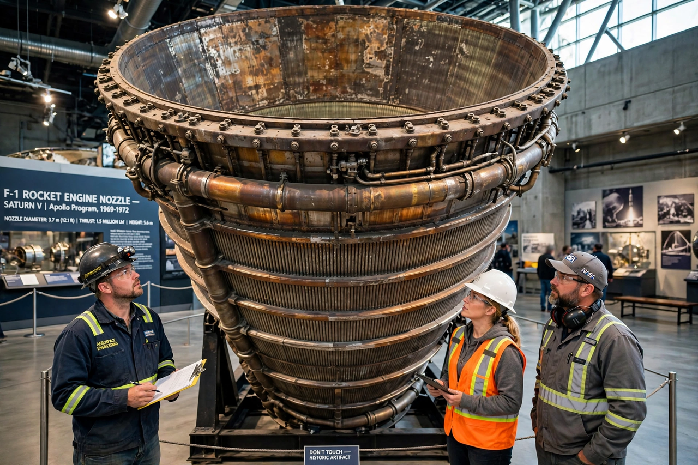

F-1 (rocket engine)
From Wikipedia, the free encyclopedia
| F-1 (rocket engine) | |
|---|---|
| Manufacturer | Rocketdyne |
| Type | LOX / RP-1 gas-generator cycle |
| Used on | Saturn V first stage |
| Thrust | ~6.8 MN (sea level, later uprated) |

An F-1 engine, the largest of its kind.The F-1 is a rocket engine developed by Rocketdyne and used in the first stage of the Saturn V — five of them made the Saturn V the most powerful rocket of its era, together producing about 34 million newtons of thrust at liftoff. It remains among the most powerful single-chamber liquid-fuelled rocket engines ever flown.
Development began in the 1950s for the US Air Force before NASA adopted the engine for Apollo. Early testing was plagued by combustion instability — explosions inside the chamber — which engineers famously attacked by setting off small charges in the running engine to study the oscillations, adding baffles to the injector plate until the F-1 could recover from induced disturbances within fractions of a second.
Legacy
Thirteen Saturn Vs flew with 65 F-1s and no engine failure caused a mission loss. Surviving engines are museum pieces; two were recovered from the Atlantic seabed in 2013 by an expedition funded by Jeff Bezos, having powered Apollo 11 and other missions. Studies for the Space Launch System considered and rejected an F-1 derivative (the F-1B) in favour of Shuttle-derived boosters; the Raptor era favours many smaller engines over a few giants.
See also
Saturn V · Rocket engine · Space Launch System · Apollo program